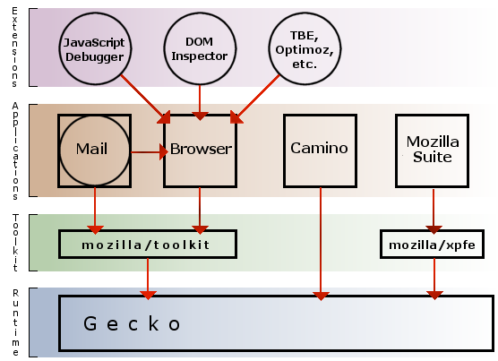
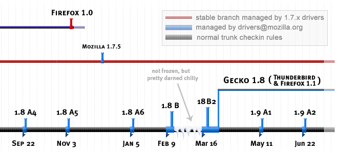

Mozilla 開発ロードマップ
目次
はじめに
Mozilla 開発ロードマップへようこそ。1998年に、標準に準拠し、モジュール化され、移植可能な Mozilla の新しいコースを定めた オリジナルのロードマップ 以来、統合された Mozilla Application Suite の現状への大きな 変更 と共に、ロードマップの三回目の大幅な更新になります。ひとつ前のロードマップ には、Mozilla 1.3 までのマイルストーンと開発のルールが記載されており、古いロードマップへのリンクもあります。
この文書のほとんどで、昨年提案されてた新しいアプリケーション構造が反映されています。その提案の結果生まれた努力は、ようやく実を結びました。比喩を混ぜていうと、新しいアプリケーション生命体 Firefox と Thunderbird が孵化したのです。
2004年に予定されていた新しい大幅なロードマップアップデートは、延期されました。これから追加される予定の構想は、Brendan のロードマップブログ をご覧ください。暫定的なロードマップアップデートは、Firefox 1.0 の「aviary 1.0」リリースおよび Thunderbird 1.0、そしてそれに続く 1.8 マイルストーンに焦点を当て、間もなく発表されます。
私たちは長い道のりを歩んできました。Mozilla 1.0 宣言 で定められた必要条件を満たした Mozilla 1.0 マイルストーンを完成させ、これは質の高いリリースであるとともに、より安全な開発と派生製品をリリースするための安定したブランチとして、コミュニティのみならずより広い世界に提供されました。Mozilla 1.0 から生み出された Mozilla ベースのプロジェクトと製品のリストが Mozilla Hall of Fame にあるのでご覧ください。
1.0 から 1.3 までの中心的な「トランク」開発系では、標準準拠であり、モジュール性があり、移植可能な、1998年に始まったコードベースにおいて、長い間懸案となっていた多くの欠陥を修正する事により、0.9.x マイルストーン期に開始されたフットプリント 【訳注：割り当てられた後、解放されないメモリ領域の大きさのこと】 やパフォーマンス関連のプロジェクトを更に進行させました。また私たちは、タブブラウジングやポップアップブロッキング、http://paulgraham.com に着想を得たベイズ式スパムフィルタなど、素晴らしい仕様の登場を目の当たりにしました。さらに、より高速で、ブラウザに焦点を絞ったプロジェクトである Mozilla Firefox（かつての Firebird 【訳注：その前は Phoenix】）や Camino （かつての Chimera） も登場しました。
新しいロードマップ
しかし、1.0 以降に私たちが行ったような段階的な開発は、健全なオープンソース・プロジェクトにとって充分なものではありません。より良い未来への道を描いた新しいロードマップが Mozilla に必要な事は明らかです。以下に提案するのは、独立したアプリケーション・プロセス間で共有可能な Gecko Runtime Environment （GRE） に基づいた新しいアプリケーション・アーキテクチャです。理論的根拠と予想される代償について述べる前に、まずその意味するところと主な構成要素を以下に示します。
- 開発努力を新しいスタンドアローンアプリケーションに集中する：現在 Mozilla Firefox と名前がつけられているブラウザ、Mozilla Thunderbird メール／ニュースアプリケーション、そして独立で作動する Composer および、Firefox や Thunderbird でも利用されている新しい XUL ツールキットをベースにしたその他のアプリケーション。私たちは Mozilla Firefox と Thunderbird を主力製品とすることを目標にしており、拡張機能の作者やその他の ISV が開発作業を進める際には Firefox や Thunderbird をターゲットにするように働きかけています。
- アップデート情報：セキュリティアップデートを含めた持続的なメンテナンスを行います。すでに Mozilla を展開している企業やその他の団体のために、 SeaMonkey アプリケーションスイートの最終安定ブランチ （1.7.x） を対象とします。
- Gecko レイアウト・アーキテクチャの根本的なバグを修正する事によって、メンテナンス性、パフォーマンス、そして拡張性に優れた将来像への道を開きます。このように Gecko を改良することで、全ての製品をより優れたものにすることができます。
- 無制限の CVS アクセス権を持つハッカーの集団が関わるというオーナーシップ開発モデルを捨てて、強いリーダーシップと明確な委任制度によってモジュールが強固に守られるという、オープンソース界でより一般的な開発モデルへの移行をさらに進めます。例えば、NSPR や JavaScript、最近の主なマイルストーンでの Gecko、そして Mozilla Firefox のように。
これら新しいロードマップの要素の背後にある理由は、量よりも質を追求する事にあります。成果の数は少なくなりますが、その質は向上しなければなりません。そして、充分な拡張機構があれば、（例えば） メインメニュー項目のようなユーザインターフェースの整理をめぐってコミュニティ内で論争する事もなくなるでしょう。
もう一つの拡張性の例として、ユーザインターフェース以外のものをあげましょう。Gecko は、実験的または制限付きであっても、新しく台頭してきた XML や関連する標準をサポートする必要があります。その際に、全員が nsCSSFrameConstructor.cpp をハックしなければならないようでは駄目です （そして、この巨大なファイルは、1.5、1.6 さらにそれ以降の開発期間で徐々に変更を行って、削除あるいは大幅に単純化する必要があります）。優秀な基本技術 （HTML や XUL ウィジェット、SVG） とスタイリングおよびコンポジションツール（CSS、XBL）を利用すれば、新たな C++ コードの爆発的増加やレンダリング・オブジェクトの肥大化を防げる筈です。
考察
1998 年 3 月 31 日、Netscape がオリジナルブラウザのコードベースをオープンソースとして公開した時に、人々の期待、製品の計画、チェックインの権限、そして実際のコードの構造、これらの全てが、Netscape 4 の時代に "Communicator" として初めて大々的に PR された巨大なApplication Suite （ブラウザ、メール、エディタ） を継続させる方向に向かっていました。この「多機能製品」【訳注：原文は、スイス・アーミーナイフ = 十徳ナイフ】 方式は、1998 年の末に私たちが Gecko、XPFE、 および スクリプト可能な XPCOM インターフェース で Mozilla をリセットした時にも継続されました。この間に、もちろん Netscape は、主として給料を支払われている貢献者およびインフラという形で、 Mozilla に対して非常に寛大なサポートを行なってきました。
その結果は、ユーザインターフェースのフロントエンドに膨大なバックエンド・モジュールを備えた、機能豊富で複雑なアプリケーションでした。この野心的な統合から、XUL や XBL などのたくさんの良い成果が得られました。
それでも、もし単に「ブラウザを書き直す」という事が目的であれば、XUL は経済的なものではなかったでしょう。まさしく 意図された通り に、一度クロスプラットフォームのフロントエンドを書けば、ネイティブな OS のツールキットを元にしたフロントエンドを最低三つのプラットフォームに対して書かずに済みました。しかしその結果として、ネイティブなブラウザだけのフロントエンドとブラウザの１つのバックエンドを開発するのに要するのと同じくらいの人数と時間を費やして、スイートの様々なアプリケーションを作成したり、各アプリケーションのコンポーネントを統合したりしているのです。
上記のような 批判が成立するには、Mozilla と主要な貢献者たち、例えば Netscape が、メール・ユーザエージェントやニュースリーダーや HTML エディタや、アプリケーションの枠組みを開発せず、ブラウザだけを開発する事に甘んじていられた、という仮定が必要です。今から振り返っても、「ブラウザだけ」が充分であったとは思えません。XUL は、価値のあるクロスプラットフォームのメールと composer アプリケーションを実現しただけではなく、カスタマイザー、ローカライザー、ディストリビュータ、そしてポータブルアプリケーションの開発者たちにとっては、大きな勝利（「経済的なもの」） でした。私たちの第一の目的ではなかったのですが、私たちは、実に品質の高い、ウェブ指向のクロスプラットフォームなアプリケーションの枠組みを開発したのです。プラットフォームとしての Mozilla （Mozilla-the-platform） です。
とはいうものの、統合に関わるコストは高くつきます。仮に、かゆい所に手が届く有用なユーザインターフェースを作らず、Application Suite としての Mozilla （Mozilla-the-application-suite）のそれぞれのアプリケーションの目標を最低限のものにしたとしても、です。スタンドアロンのアプリケーションは、起動が早く、動的メモリ消費量が平均的に小さく、そしてより頑丈でクラッシュしにくい傾向にあります。
Application Suite がコスト高になる別の例は、本質的に過負荷で複雑なユーザインターフェースです（数え出すときりがありませんが、一つだけ例をあげれば、「ファイル｜新規作成」サブメニュー）。スイートがターゲットとするユーザ層が明らかにされた事はなく、このユーザ層は、流行のビジネスと、ボランティア - 貢献者が起こす風に揺れ動いているように思えます。Hyatt の blog は、スイートというアプローチに反対する立場の意見を的確にまとめています。簡単に言えば、特定の領域で最も動機がある人や、アプリケーションの個々のルックアンドフィールを決めて最後にチェックインする人が誰であれ、偉大なアプリケーションは共有地としては運営できないのです。
Gecko もまた、無理をしすぎて苦しんでいます。それは、Gecko の上に立つ統合されたアプリケーションが多すぎるからではなく（これらはデザインと移植のバグの多くを振り分けるのに役立っています）、Gecko が元来、実際問題として拡張するのが容易ではない形式で高度に「モジュール化」されているからです。同時に、Gecko には、いまだに いびつな （baroque）部分があります。 その原因は、初期におけるデザインの制限と、中心的な問題をパッチで解決してきたためにコードが蓄積された事です。
理由の要約
簡単に、また上記したロードマップの要素リスト順に述べると、この新しい計画の理由はこうです。
- Mozilla Firefox は、実に小さく、速く、そして より良い ものです -- Firefox が、Mozilla コミュニティのいろんな方面で求められている、互いに競合するような機能を全て備えているから良いの ではなく、強固な「アドオン」拡張機能を持っているから良いのです。私たちは、ユーザが違えば要求する機能もまた異なる、という事を認識しています。このような要求は、まったく理にかなったものです。さまざまな機能の全てを、統合された Application Suite に盛り込もうとするのは、合理的ではありません。技術的にも社会的にも受け入れられないものです。
- ブラウザにとって良いものは、メールアプリケーションにも良いものです。Mozilla の統合されたメールは多くの優れた機能を備えていますが、他のアプリとの統合点が多すぎる事の弊害を受けています。また、現存している複雑なフロントエンドを保守しているのは少なすぎる人数の人々であり、彼らの多くは今は別の仕事で給料を得ているのです。
- Gecko の支持者たちが、いま率先して行なっている事は、レイアウト構造のバグとデザインの欠陥に対する修正であり、これは症状にパッチを当てる事では解決できないものです。これらのバグは、メンテナンス性、フットプリント、パフォーマンス、そして拡張性を大きく改善させる際の障害になっています。ソースコードの複雑な部分を削減するだけで、Gecko は、よりメンテナンスしやすく、より速くなり、そしておそらくダイナミック・フットプリントが少なく、コード・フットプリントは著明に少なくなるでしょう。
- Mozilla の最も初期から行われてきた、CVS アクセスの 誤った 平等主義モデルと、ツリー全体にわたるハッキングは、終わりを迎えています。当初のハッカーたちの多くは立ち去って、後に残されているのはオーナーのいない、あるいはオーナーの権限が有効ではないモジュール群です。やりすぎと、転職と、伝統的な CVS アクセス権が相まって、mozilla.org が作った コードレビューの資格 は、関連するモジュールオーナー（オーナーがいるとすれば、ですが） に求められるべき物よりはるかに敷居の高い物になってしまいました。
オーナーシップについて...
最後の点は、議論の分かれる所です。少しのあいだ詳しく論じ、例外を提示する事ではっきりさせたいと思います。
- スーパーレビュー は一般論として良い制度です。その領域のエキスパートから一つ、そして強力なジェネラリストからもう一つ、という二段階のレビューは、しばしば（大なり小なり） 危険な変更を成功に導きました。私たちは、有益なものをやめるつもりはありません。
- しばしば数人の献身的なボランティアによって行なわれる、ツリー全体の価値あるクリーンアップと、ビルドシステムのハッキングを軽視している、というつもりはありません -- この種の作業は継続されるべきです。
- また、オーナーが常に正しいと言い張ったり、彼らが「終身在職権」を持っていて交代させる事ができないと言うつもりもありません。
これらの簡単な問題を片付けた上で、後に残っている重要な点は次のものです。決断力をもって支配するコンポーネントオーナーが一人いれば、オーナー不在で決断が下せない状態よりは、ほとんどの場合よい結果になる、という点です（注意：三人以上の委員会は有効なオーナーではありません）。この事は、トップダウンによるアプリケーションのデザインとポリシーの設定、とりわけユーザインターフェースのデザインにおいて、特に当てはまります。アプリケーション内のユーザインターフェースを首尾一貫したものにするためには、「アプリケーションの皇帝（独裁者）」によるリーダーシップに勝るものはありません。デフォルトの共通キーバインドのように、アプリケーション同士で統一が必要な場合、皇帝たちが連絡し協力して、整理統合することを期待します。
Mozilla が「秩序を回復する」時が来たのです。 偉大なソフトウェアは、一人または数人のハッカーによって作り始められます。より大勢の人々がチームとなって、作成者の指導のもとに、テストし、クリーンアップし、拡張します。そして中には、作成者たちに合流あるいは入れ替わるまでに成長する人たちも出てくるでしょう。コードのテストと同じく、コードのレビューは、すでにあるものをチェックする手続きであり、凡庸な素材から優秀なコードを作ることはできません。
従って、ケースバイケースではありますが、スーパーレビュアーたちがそのモジュールではオーナーの権限が有効に働いているとみなしている場合、用心深いオーナーに対してスーパーレビューを必ずしも必須ではないのものとし、強力なオーナーシップを促進します。そして、オーナーシップが弱いか存在しないモジュールでは、私たちはオーナーを見つけるための手段を取るでしょうし、候補者が誰もいなければ、オーナーの権限が低い、あるいはオーナー不在のコードへの依存度を減少するでしょう。ある重要なモジュールにおいてオーナーなしでしばらく「減速走行」できるのであればそうするでしょうが、経験上、それは減速走行よりも深刻な状態に至るのが常だったのです。
以上の記述が意味していない事
例外をあげることで明確化する、というのをもう少し続けると、次のような事も私たちは提案して いません。
- 私たちは SeaMonkey Application Suite やその XPFE フロントエンドを当分の間維持し続けます。この由緒正しいコンポーネントあるいはスイート全体に基づいた製品を出した会社はいくつかありますし、今後出す予定の会社もあります。多くの組織が Netscape 7.x といったような SeaMonkey やその派生製品を展開しています。私たちはこうした製品を、確立された継続的な手法でサポートしていこうと考えています。しかし、私たちは今でも Firefox や Thuderbird によって切り開かれたような、もっと柔軟な アプリケーション構造 をもった Mozilla にしていこうともしています。こうした分野こそが、私たちの斬新な開発努力が向かうべき方向だと考えています。
- 私たちは、XUL を捨てて、ネイティブな GUI ツールキットのフロントエンドを選ぼうとしているのでは ありません。また私たちは、Mozilla の Gecko をベースにしてネイティブな OS X のフロントエンドを持つブラウザである、Camino を軽視しようとしているのでもありません。どちらのアプローチも成功をおさめており、誠実なファンがいます。Mozilla コミュニティは、両方のアプローチを受け入れたのです （OS X 版の Mozilla Firefox まで作成され、繰り返しテストされています）。
- 従って、Mozilla Firefox を含めた新しいスタンドアローンアプリケーションへと移行するにあたり、私たちは Mac の XUL を捨てるつもりはありません。Mozilla のクロスプラットフォームなアプリケーションとツールキットが、人々が実際に使えるアプリケーションとして、クロスプラットフォームかつ使用可能なものであり続ける事を確認するのが私たちの目標です。また、Gecko の組み込みをテストするための環境は、他のプラットフォームと同様に、Mac でも必要です。ですから、OS X のためのナイトリーおよびマイルストーンビルドを提供し続けるつもります。
- XPFE に基づいたブラウザと統合されている重要なツール、 DOM インスペクター と Venkman （JavaScript デバッガ）は、新しいスタンドアローンなブラウザでアドオンとしてサポートされる必要があります。
- Mozilla Application Suite の、そのほかの統合されたコンポーネントである、Calendar、 Chatzilla、そして Composer （HTML エディタ・アプリケーション）もまた、なくなりません。これらがどのように含まれるかはまだ未定です。スタンドアローンのツールキット・アプリ になるか（もしそうなら、どちらの XUL ツールキットか）、あるいは Mozilla Firefox の一般的なアドオンになるか （もしそうなら、新しい XUL ツールキットを使用する必要があるでしょう）は不明です。いずれにせよ私たちは、コミュニティが行なうテストとフィードバックのためのデイリー・ビルドとマイルストーン・ビルドを提供するなどして、これらのモジュールのオーナーが必要とするあらゆるサポートを行なうことを約束します。
アプリケーション・アーキテクチャ
新しいアプリケーション・アーキテクチャの提案を始めるにあたり、関連する事実を要約し、いくつかの用語を定義しておきましょう。
現在、Mozilla テクノロジーを使用して作成されるアプリケーションには、主に二種類あります。ひとつは、組み込み アプリケーションです。これは、Mozilla のレイアウト・エンジンを使用していますが、レイアウトされた HTML または XML 文書以外のユーザインターフェースには、独自のコードを使用しています。もう一つは、ツールキット アプリケーションです。これは、Mozilla 自体の上に作成され、クロスプラットフォームとして設計されています。ユーザインターフェースの要素は XUL で定義され、Gecko を使用してレンダリングされています。
どちらのアプリケーションでも、 Gecko Runtime Environment （GRE） を使用して、一度 Gecko をインストールすれば、それを共有して使用する事ができるようになるでしょう。アプリケーション間でプロファイルが共有できるようにさえなるかもしれませんが、独立したプロセスで動作しているアプリケーションの間でプロファイルを共有できるようなプロセス間の通信機能は、（1.7 アルファ版の時点では） まだ作成されていません 。
ツールキットアプリケーションは、エクステンションもサポートするでしょう。これは、中核になるアプリケーションの上に置かれて、追加機能を提供するように設計された特殊なアドオンです。ブラウザの場合でいえば、マウスジェスチャー、サイトナビゲーション・ツールバー、DOM インスペクター、そして JavaScript デバッガがこのようなアドオンの例です。
さらに、私たちは、特定のツールキットアプリケーションは、それ自体がエクステンションでもあるべきだ、と提案します。つまり、スタンドアロンのアプリケーションであると同時に、他のアプリケーションにインストールされるアドオンでもあるように設計されるべきです。このようなアプリケーションの例として、Thunderbird、別名 Mozilla メール があり、スタンドアロンのアプリケーションとしても動作し、また Mozilla Firefox、別名 Mozilla ブラウザにエクステンションとして直接インストールする事もできるようになるでしょう。
思想としては、統合されすぎた Application Suite から単純なツールキットアプリケーションへの移行です。デフォルトの設定から上級者向けの機能を削除すると同時に、好みのエクステンション群を基本機能に追加してあなた独自のブラウザを作成できる強力なツールを提供します。mozilla.org がサポートしなければならない独自のビルドが多数できるのを避けるために、一般的なエクステンションはすべて無効でインストールされる状態で出荷されるでしょう。こうすれば、エクステンションを使いたい人は簡単に有効にできますし、使いたくない人はアンインストールできます。
このアーキテクチャは、次の図でわかりやすくなるでしょう。

この図でメールは、アプリケーション （四角） と同時に、エクステンション （メールが拡張する対象であるブラウザに向かう矢印を持つ円形）としても示されています。アプリケーションではない純粋なエクステンションは、図の一番上に置かれています。
やるべき事のリスト
このロードマップは提案です。私たちは、Mozilla プロジェクトが向かうべきだと私たちが考えている方向を示しているのです。私たちが今いる場所 （1.4 アルファ）からより良い場所に到達するためには、少なくとも以下に示す事を行なう必要があります。
- 二つのブラウザによってビルドされたファイルに追加された MOZ_PHOENIX #ifdefs の数を削減する。理想的にはゼロになるまで。
- 次のアドオンのサポートと開発を継続する：
- DOM インスペクター
- Venkman
- サイト・ナビゲーション・ツールバー
- メールの統合 （メール作成のための <ctrl-M> など）
- 新しい XUL ツールキットに基づいた Thunderbird の開発。
- 新旧両方のブラウザ・ビルドをカバーするのに充分な数の tinderbox マシンを用意する。
繰り返しますが、私たちはここで、ただ方向性を示しているだけです。行動計画の詳細はニュースグループや Bugzilla を通じて作り上げていきますが、私たちは将来の数マイルストーンにわたって新しいアプリケーション構造を実装しようと考えています。そして、企業や同様の規模の展開を行っている SeaMonkey を維持する一方、アプリケーション開発努力を新しいアプリケーションに集中していきたいと考えています。コメントをいただきたいと思います。できれば mozilla.seamonkey ニュースグループにお願いします。
マイルストーンスケジュール
本稿の前のロードマップに 記載されている ように、Mozilla プロジェクトは、四半期ごとにマイルストーンをリリースする、という計画に従ってきました。この計画では、新機能を盛り込んだ安定しているリリースを定期的に供給する、という点に重点がおかれています。理想的には、リスキーな変更を「アルファ」マイナーリリースに詰め込み、安定化のための「ベータ」期間が続き、そして短いフリーズ期間内で「出荷の障害になる」バグだけを発見して修正する、というものです。
コミュニティの多くの人から、アルファ期間を延長してほしいという要望が出されました。しかし、アルファ期間が長すぎると、大勢のテスターから自動的に送られてくるクラッシュレポートなどのフィードバックを集計して、それに 対処する ことができなくなります。とは言っても、アルファ期間をベータ期間よりも長くするのは合理的な事だと私たちも思いますので、ベータ期間から一週間分をアルファ期間へと移しました。以下が更新したマイルストーンスケジュールです。

下の表は、各マイルストーンの予定を、トランクのフリーズ日、ブランチ作成日、マイルストーンのリリース日に分けてあります。（マイルストーンの開始日は、前のマイルストーンのブランチ日です）
| マイルストーン | 開始 | フリーズ | ブランチ | リリース（目標） | リリース（実際） |
|---|---|---|---|---|---|
| 1.8alpha6 | 2004-11-22 | 2005-01-04 | 該当なし | 2005-01-06 | 2005-01-12 |
| 1.8beta1 | 2005-01-06 | 2005-02-09 | 該当なし | 2005-02-11 | ? |
| 1.8beta2 | 2005-02-11 | 2005-03-16 | 該当なし | 2005-03-18 | ? |
| 1.8 | 2005-03-18 | 該当なし | 2005-03-30 | ? | ? |
| 1.9alpha1 | 2005-03-30 | 2005-03-11 | 該当なし | 2005-03-13 | ? |
| 1.9alpha2 | 2005-05-13 | 2005-06-22 | 該当なし | 2005-06-24 | ? |
いつもの通り、マイルストーンのフリーズ時刻は、大平洋標準時の火曜日午後 11時 59分です（tinderbox のページにある告知をご覧ください）。
Mozilla ベースの製品をリリースしようと計画していて、その開発スケジュールが上記のマイルストーンとうまく合わない場合は、私たちに お知らせ ください。（情報の秘密は外部にもれないようにしますし、必要であれば適切な守秘手段をとります。）
協力するには
C および C++ ハッカーへ： tinderbox は現在 コードフットプリント を計測していますので、フットプリントを増やすのではなく減らしていきましょう。コードを追加するというありがちな誘惑に負けないでください。コードを削除する事、複雑になりすぎたコードを単純化する事、早まった最適化を元に戻す事、そして根拠のない XPCOM の使用や充分に XPCOM 化されていない古いコードを一掃する事を心がけてください。新しい機能を追加しなければならない場合は、正しいライブラリにバンドルされているか、すなわち新しいライブラリを追加しないで良いかを確認してください。最小限の組み込みブラウザビルド にリンクされるモジュールへのいかなる追加も driver ら による承認が必要です。
Mozilla 組み込み制作者へ： embed、footprint、mlk、perf その他の適切なキーワードをつけて Bugzilla に意見を投稿してください。Bugzilla の新しいリクエスト追跡機能を利用して、そのバグを将来のマイルストーンに対するブロッキングとして指定してください （例： blocking1.7b?）。そして、なぜそのマイルストーンまでにバグの修正が必要か、説得力のある説明を付けてください。Mozilla プロジェクト・マネージメントを利用すれば、できるだけ多数のマイルストーンキーワードを満たすように修正目標を決められるようなハッカーがそのバグを担当するように努力します。
バグ担当者、そして特に、Future バグや期日未定のバグを名目上の担当者の代わりに修正できる支援者へ： 割り当てられたバグを mozilla 1.5 と mozilla 1.6 マイルストーンの間で修正目標を定めてください。分類の目安として、アプリケーションおよびレイアウト再構築に関するものは 1.5 から 1.6 の間です。バグを支援者に任せるようにしてください。future とされたバグ、あるいは期日未定のバグで、すぐに修正するべきだけど修正を支援してくれる人が見つからない場合、drivers@mozilla.org に知らせてください。
コミュニティメンバーへ： Bugzilla のマイルストーン指定機能を使う場合は、慎重に使用してください。担当者の同意がないまま他の人のバグのターゲットマイルストーンを変更しないでください。もちろん、優先度を上げる手助けとして投票することはできます （ただし、パッチを投稿するほうが投票よりも大きな力を持つことを忘れないでください） 。最後に、支持活動や「同感です」的なコメントをバグシステムに投稿するのはご遠慮ください。
プロジェクト・マネージメント
mozilla.org は、早急な援助を必要とするバグへの支援者を求めている開発者のため、またリスクを軽減するため、そして Mozilla ベースの商品化プロジェクトに対して製品リリースの管理面を支援するため、プロジェクトマネージャーのグループ、drivers@mozilla.org を創設しました。